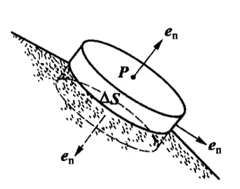

一带电体系中电荷静止不动，从而电场分布不随时间变化的现象.
质料均匀、温度均匀的导体.
其内场强处处为0.
若导体内电场不处处为0，在电场不为0处自由电荷将会移动，即导体未达静电平衡.
[推论]处于静电平衡状态的均匀导体为等势体，导体的表面是一个等势面.
[注]导体表面与导体内部电势相等.
导体内任意两点P、Q间的电势差为：
$$U_{PQ} = \int_P^Q \mathbf{E} \mathrm{d}\mathbf{l}$$若\(\mathbf{E}\)处处为0，则导体内部所有各点电势相等，其为等势体.
[推论]导体外靠近其表面的地方的场强与导体表面处处垂直.
由于电场线与等势面处处正交，所以导体外的场强必与它的表面垂直.
达到静电平衡时，导体内部不存在未抵消的净电荷（电荷体密度\(\rho_e = 0\)），电荷仅分布于导体表面.
一个带电体系存在的正负电荷的代数和.
达到静电平衡状态的导体，并不一定是电中性的，也许是带电的物体，但是其内部的电场强度在各个电荷的相互抵消下为0.
静电平衡状态下，导体表面之外的附近空间的场强\(\mathbf{E}\)与该处导体表面的电荷面密度\(\sigma_e\)有如下关系：
取导体表面之外附近空间一点P，在P点附近的导体表面取一面元\(\Delta S\)，此面元充分小，使其电荷面密度\(\sigma_e\)可认为是均匀的.
如图作扁圆柱形高斯面，使圆柱侧面与\(\Delta S\)垂直，圆柱上底通过P，下底在导体内部，两底均与\(\Delta S\)平行，并无限靠近它，因此其面积均为\(\Delta S\).

通过高斯面的电场强度通量为：
$$\begin{aligned} \Phi_E &= \unicode{x222F}_S E\cos\theta\mathrm{d}S\\ &= \iint_{上底} E\cos\theta_1\mathrm{d}S + \iint_{下底} E\cos\theta_1\mathrm{d}S + \iint_{侧面} E\cos\theta_2\mathrm{d}S\ \end{aligned}$$由于导体内部场强处处为0，因此第二项积分为0.
由于导体表面附近场强与导体表面垂直，故第三项积分中\(\cos\theta_1 = 0\)，即第三项积分为0.
第一项积分中，\(\cos\theta_1 = 1\)，且由于\(\Delta S\)充分小，其上场强可以近似认为与P处场强相等，因此有：
$$\Phi_e = E\Delta S$$高斯面内包含的电荷量为\(\sigma_e\Delta S\).
根据高斯定理：
$$\Phi_E = \frac{\sigma_e\Delta S}{\epsilon_0} = E\Delta S$$ $$\therefore E = \frac{\sigma_e}{\epsilon_0}$$这里的“附近”是指紧贴导体表面的区域.
由此公式可以看出：导体表面附近的电场强度与该处的电荷面密度成正比.
对于孤立的带电系统而言，电荷分布有如下定性规律：
[注]孤立导体表面的电荷面密度\(\sigma_e\)与曲率之间并不存在单一的函数关系.
导体壳内无带电体，且处于静电平衡时：
在静电平衡状态下，腔内无其他带电体的导体壳与实心导体一样，内部无电场.
只要达到静电平衡状态，无论导体壳本身带电还是导体处于外界电场中，此结论总是对的.
因此，导体壳的表面就“保护”了它所包围的区域，使之不受导体壳外表面上的电荷或外界电场的影响，这种现象称为“静电屏蔽”.
不导电的绝缘介质，内部无可以自由移动的电荷（自由电子）。
电介质的极化在外电场的作用下，电介质内的正、负电荷仍可作微观的相对移动，从而使电介质内部或表面出现带电现象。
此时，总电场\(\mathbf{E}\)是自由电荷电场强度\(\mathbf{E}_0\)和极化电荷电场强度\(\mathbf{E}'\)的叠加。
极化电荷\(q'\)（束缚电荷）电介质极化出现的电荷。
介质极化率\(\chi\)对于同一点，\(\chi\)为一个常数，但不同点的\(\chi\)可以不同。若电介质中各点的\(\chi\)相同，则该电介质为均匀电介质。
各向同性介质中：
$$\mathbf{P} = \epsilon_0\chi\mathbf{E}$$当外电场不太强时，只是引起电介质的极化，不会破坏电解质的绝缘性能。
当外电场过强时，电介质分子中的正负电荷有可能被拉开而形成可自由移动的电荷，由于大量自由电荷的产生，电介质的绝缘性能就会遭到明显破坏而变成导体，这种现象就叫做电介质的击穿。
击穿电场强度一种电介质材料能承受的不被击穿的最大电场强度。
电位移矢量\(\mathbf{D}\) $$\mathbf{D} = \epsilon_0\mathbf{E} + \mathbf{P}$$ 各向同性介质$$\mathbf{P} = \epsilon_0\chi\mathbf{E}$$中：令\(\epsilon_r = 1 + \chi\)为介质的相对介电常数有： $$\mathbf{D} = \epsilon_0(1 + \chi)\mathbf{E} = \epsilon_0\epsilon_r\mathbf{E} = \epsilon\mathbf{E}$$